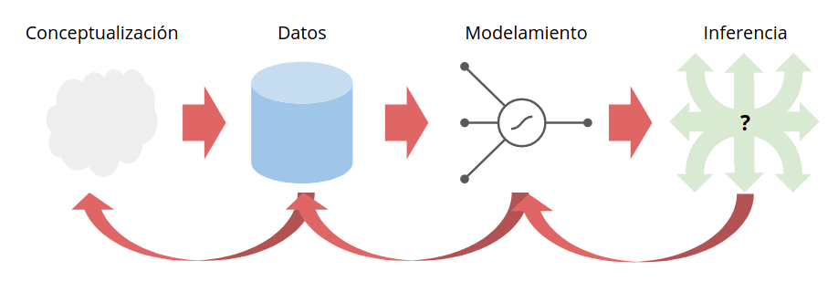
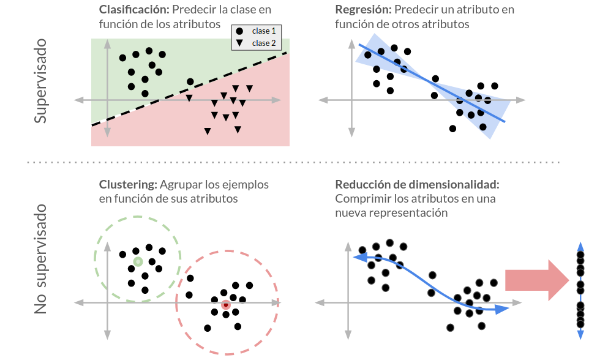
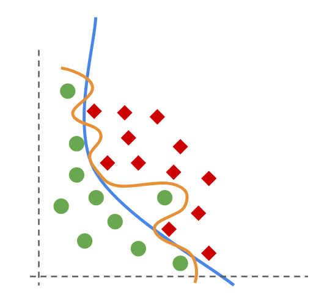

1. Machine Learning: Conceptos clave¶
1.1. ¿Qué es Machine Learning?¶
Podemos definir Machine Learning o Aprendizaje de Máquinas como
El estudio de sistemas que aprenden reglas o patrones en base a ejemplos para resolver una tarea
En este contexto con “ejemplos” nos referimos a
Datos asociados a la tarea que se quiere resolver
Mientras que sistema (o máquina) correspondería a
Algoritmo o modelo matemático que mejora su desempeño entrenándose con los ejemplos
El esquema conceptual general de ML se muestra en la siguiente figura
{kind=link}
donde
Conceptualización: Se refiere a identificar el problema
Datos: Se refiere a la recolección, importación, pre-precesamiento y etiquetado de datos
Modelamiento: Se referiere a la selección, entrenamiento y validación del o los modelos
Inferencia: Se refiere a utilizar el modelo para tomar decisiones sobre ejemplos nuevos
En este último punto yace el objetivo principal de Machine Learning (ML)
Entrenamos modelos para clasificar/predecir/agrupar ejemplos que el modelo no ha visto aun
Un modelo que realiza inferencias correctas en ejemplos nuevos es un modelo que ha logrado generalizar lo aprendido. Para que el modelo sea capaz de aprender y generalizar ML combina técnicas de estadísticas y optimización computacional
1.2. Taxonomía de algoritmos de Machine Learning¶
Podemos hacer una clasificación gruesa de los algoritmos y modelos de ML en base a las tareas que buscan resolver. La siguiente figura esquematiza las cuatro tareas más típicas que se resuelven usando ML
{kind=link}
En la figura podemos distinguir cuatro tipos de tareas agrupadas bajo dos paradigmas: Aprendizaje supervisado y Aprendizaje no supervisado.
Los modelos de aprendizaje supervisado buscan aprender una función que prediga un objetivo (categórico, discreto o continuo) en base a los datos. En la jerga de ML este objetivo usualmente se denomina etiqueta y debe entregarse al modelo durante su entrenamiento.
Los modelos de aprendizaje no supervisado buscan revelar estructura en los datos sin utilizar etiquetas. Por ejemplo estos métodos pueden usarse para encontrar grupos de similitud, jerarquías entre las variables o nuevas representaciones y visualizaciones de los datos.
Durante la unidad anterior vimos algunos ejemplos de regresión. En este unidad nos enfocaremos en las tareas de clasificación y agrupamiento (clustering)
1.3. Complejidad y Sobreajuste¶
La complejidad de un modelo tiene relación con la cantidad de parámetros que tiene. En general mientras más parámetros tenga un modelo más flexibilidad tendrá para modelar los datos
En ML es muy importante ser cuidadoso en lo que refiere a calibrar la complejidad de un modelo
Un modelo con muchos parámetros pueden aproximar funciones arbitrariamente complicadas
Un modelo con muchos parámetros podría aprender los ejemplos de memoria y perder su capacidad de generalizar
Cuando un modelo no es capaz de generalizar se dice que el modelo se ha sobreajustado a los datos utilizados para entrenarlo
En la siguiente figura las lineas naranja y azul representan dos modelos de clasificación que buscan separar los círculos verdes de los diamantes rojos
{kind=link}
El modelo naranjo ha aproximado los datos con error cero. Sin embargo, siempre debemos considerar que los datos no son perfectos y que pueden tener ruido. Por ende aproximarlos con una flexibilidad arbitrariamente grande nos puede llevar a “aprender el ruido” lo cual es perjudicial al momento de evaluar datos nuevos.
Para evitar el problema del sobreajuste y calibrar adecuadamente la complejidad del modelo se realizan procedimientos de validación
1.4. Validación¶
Para combatir el sobreajuste podemos usar estrategias de validación. Estas consisten en separar el conjunto de datos en dos o más subconjuntos
Validación tipo Holdout: Separamos el conjunto en tres: Entrenamiento, Validación y Prueba
Validación cruzada: De tipo K-fold o Leave one-out (N-fold)
Las estrategias de tipo holdout fueron descritas en la unidad anterior cuando estudiamos la regresión lineal. Las estrategias de validación cruzada se verán en detalle en esta unidad.
Para que nuestros conjuntos de entrenamiento y validación sigan siendo representativos del total los debemos seleccionar aleatoriamente. Si los datos están etiquetados lo ideal es preservar el balance de las clases, esto se llama hacer “particiones estratíficadas”
Una vez que hemos separado el conjunto de datos podemos medir el “error” en cada uno
Optimizamos nuestro modelo minimizando el error en el conjunto de entrenamiento
Seleccionamos los parámetros e hiper-parámetros que dan mínimo error de validación
Comparamos distintas familias de modelos con el error de prueba
En general si un modelo
Tiene bajo error de entrenamiento y de validación: Vamos por el buen camino
Tiene bajo error de entrenamiento pero alto de validación: El modelo está sobreajustado
Tiene alto error de entrenamiento y de validación: El modelo no es adecuado para el problema o hay un bug